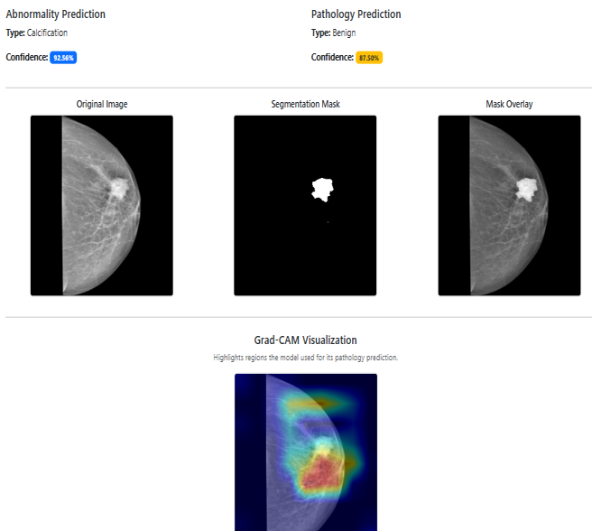
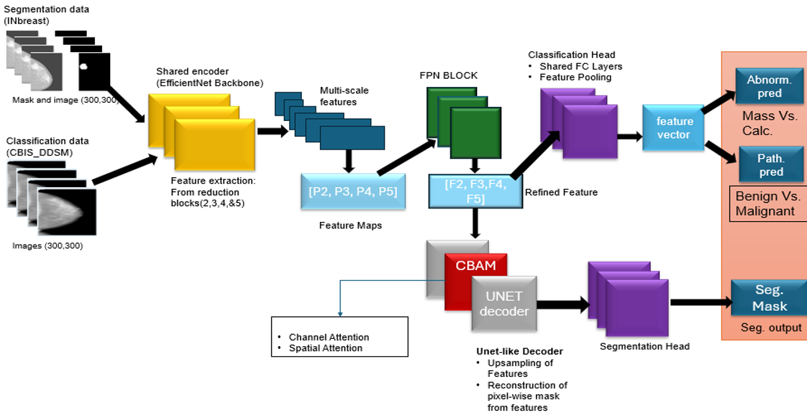

Python
PyTorch
Computer Vision

Model output showing tumor segmentation mask.

Multi-Task Learning Model architecture implemented in PyTorch.
Project Overview
Developed an automated deep learning model to segment and classify tumor masses and calcifications in mammograms using the INBreast and CBIS-DDSM datasets. The model was deployed via a web application to serve as a clinical decision support tool for radiologists.